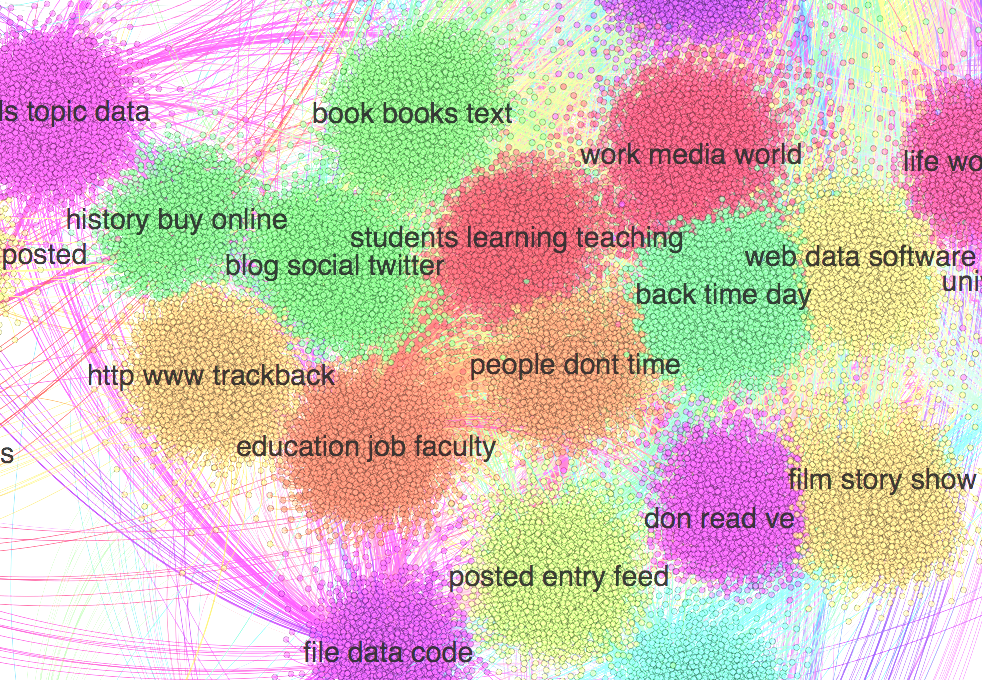

A landing page for @mcburton's dissertation project analyzing digital humanities blogs as infrastructure for scholarly communication. Discursive Infrastructure is a working title.
I am a doctoral candidate at the University of Michigan School of Information. My research interests include a healthy blend of infrastructure studies, scholarly communication, and digital humanities.
Scholarly communication in the humanities, and in the academy writ large, is in the midst of a dramatic reconfiguration. Academic publishing is in crisis (Unsworth 2003). The monograph, the canonical unit of scholarship in the humanities, is in peril (Goldblatt 2002). Existing teaching, research, and publishing practices must confront new forms of digital scholarship (Borgman 2007). The digital humanities (DH) have emerged to explore the new research, teaching and publishing practices afforded by digital technology. In publishing, the digital humanities have adopted the Web as a new discursive space, but how this space effects community and communication is not well understood. Conceptual models, like the “invisible college” (Crane 1972), must be reconsidered as DH scholars turn to the web as a platform for formal publishing and informal communication. Unlike the inferred or latent networks of the invisible college, digital communications platforms like blogs, forums, and Twitter leave traces available for us, as information scholars, to analyze (Geiger & Ribes 2011). Given new communications practice and new data about these practices, what can we learn about scholarly communication and the digital humanities more generally?
The digital humanities are adapting their means of knowledge production and dissemination in and through complex sociotechnical infrastructures. There is, as usual, an under-scrutinized infrastructural story to be told about blogs in the digital humanities. Infrastructure is the material and sociotechnical assemblage of people, technology, and information practice within, upon, and through which human activities and technological processes are carried out. An infrastructural perspective looks “under the hood,” seeking out the boring, banal, and taken-for-granted dynamics embedded within both social practice and technical structure (Star 1999). Infrastructure provides a powerful analytical lens through which complex dynamics and tensions can be foregrounded (Edwards et al. 2009). How do the technical configurations of blogging platforms affect scholar’s online discourse? Who is being included in or left out from these conversations?
The purpose of this investigation is to understand digital humanities blogs as infrastructure for scholarly communication. This framing ties together three areas of scholarship: the digital humanities, scholarly communication, and infrastructure studies. My research is motivated by the following questions:
Scholars in the digital humanities have enthusiastically embraced blogs as a platform for communication. The importance of blogs is evident in initiatives such as Digital Humanities Now and the Journal of Digital Humanities. These projects aggregate the deluge of blogs, providing filtering and editorial functions for the community by finding high quality, informative content and publishing it in a peer-reviewed journal. Digital Humanities Now and the Journal of Digital Humanities provide interesting examples of new modes of publish-then-peer-review forms of web-centric scholarship (Fitzpatrick 2011).
The editors of DHNow have curated collection of over 500 blogs. They have selected these blogs as being high quality and containing content relevant to the digital humanities. I use this list of sites as the basis for my inquiry. By scraping the text contents of each site’s blog posts, I have constructed a comprehensive dataset representing the bulk of digital humanities scholarly communication on blogs. This corpus comprises many thousands of posts extending back nearly a decade by hundreds of authors. Given the size and scope of this data, I must leverage innovative methods to achieve the kinds of understanding I seek to answer in my research questions.
Interesting and not-well-understood configurations of knowledge practice are emerging within the mutually constitutive relationship between digital humanities scholars and the technical infrastructure of the web, namely blogs. That is, important scholarly “work” is occurring on these blogs. My research investigates these communications practices from the perspective of sociotechnical infrastructure. Large-scale phenomena challenge the current ethnographic and qualitative methods used in infrastructure studies (Bowker et al. 2010). The numbers of digital humanities blogs (tens of thousands of posts) and authors are too large for standard qualitative approaches like participant observation, interviews, and content analysis. Yet, relying exclusively upon quantitative techniques glosses the rich and important nuances necessary for a critical understanding of this infrastructural phenomena.
Taking advantage of mixed-methods approaches, I use techniques from text mining to discover and explore broad themes within the corpus, then follow up with targeted qualitative interviews and content analysis. Topic modeling algorithms like Latent Dirichlet Allocation (Blei 2003) provide a means for “distantly reading” (Moretti 2005) texts and identifying clusters of co-occurring words. However, the models produced by such algorithms still require meaningful interpretation. LDA provides a means of clustering individual posts by mixtures of “topics,” which I then analyze and interpret through qualitative coding. I combine topic modeling with Grounded Theory (Glaser & Strauss 1967) to investigate digital humanities blogs as a large-scale, distributed, sociotechnical infrastructure.
Phase 0 - Data Collection: I will be archiving all of the blogs listed in the DHNow Compendium of the digital humanities, a curated listing of over 500 academic blogs. Leveraging techniques from Machine Learning I will extract text and other interesting features from individual blogs posts. This phase will produce a dataset for myself and other researchers interested in studying scholarly communication.
Phase 1 - Data Analysis: Using the extracted text, I will generate a topic model to facilitate the exploration of a corpus too large for traditional close reading and qualitative analysis. The topic model identifies patterns of discourse within the corpus, distinguishing clusters of co-occurring words and their distribution within individual documents. This model, in conjunction with the original texts, will be represented as an interactive data visualization for navigating the entire corpus. This phase will produce a web application and database to support the qualitative analysis in the next phase of the project.
Phase 2 - Data Interpretation: The topic models and visualizations alone do not provide an interpretation of, or ascribe meaning to, data they represent. Through a qualitative methodology known as Grounded Theory I contextualize the topic model, visualizations, and original texts. This phase takes advantage of the computationally generated topics and visual models to discover specific regions of the corpus for qualitative coding and interpretation. This phase will produce, in the spirit open access, an ongoing blog discussing my data, my process, and my findings.
This project makes contributions to the digital humanities through a reflexive engagement with their discursive practices, to scholarly communication through a deep examination of academic blogs, and to STS through by introducing innovative, mixed-methodological approaches to studying infrastructure.